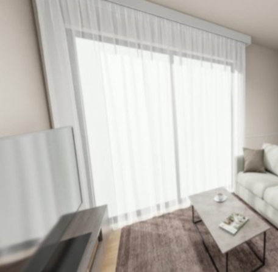
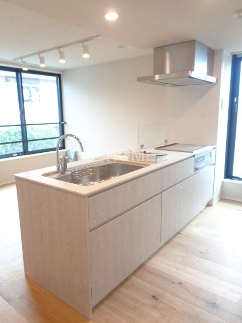
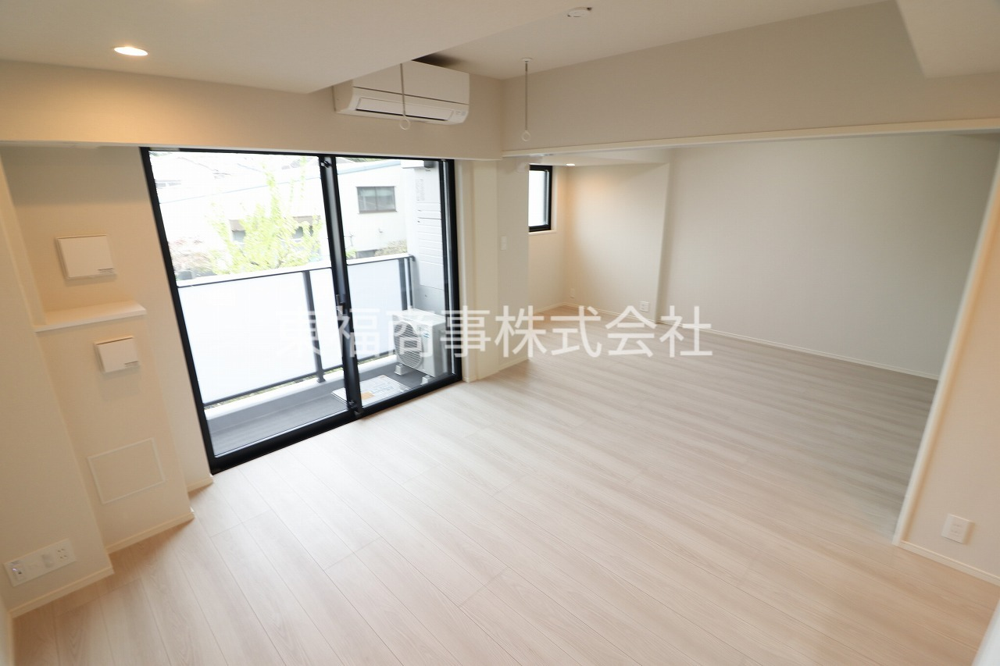
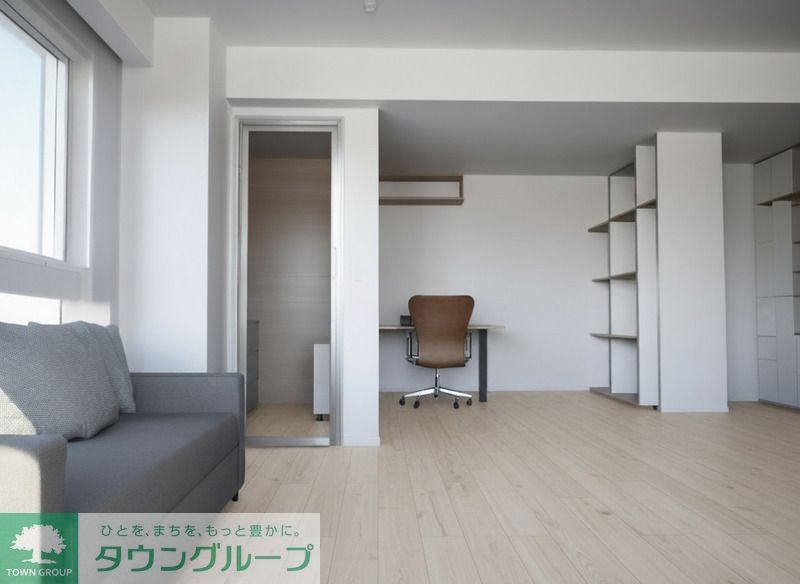

 ◎ ハザード安全🐾 ペットOK新築 20.0万＋管理費 9,000円 世田谷区 若林東急世田谷線「若林」駅 徒歩1分 1LDK51.35㎡駅チカ◎ 台地：淀橋台／洪水・液状化リスク低。閑静な住宅地で駅1分。 SUUMOで見る ハザードマップで確認
 ◎ ハザード安全🐾 ペットOK新築 27.9万＋管理費 12,000円 杉並区 上荻（西荻窪）JR中央線「西荻窪」駅 徒歩10分 1SLDK61.1㎡今回いちばん広い 台地：武蔵野台地／善福寺川の谷から離れた高台で安全。中央線で都心も便利。 SUUMOで見る ハザードマップで確認
 ◎ ハザード安全🐾 ペットOK新築 21.7万＋管理費 20,000円 練馬区 平和台東京メトロ有楽町線「平和台」駅 徒歩9分 1SLDK56.03㎡コスパ◎ 台地：成増台／河川から離れた高台。広さのわりに家賃が抑えめ。 SUUMOで見る ハザードマップで確認
 ◎ ハザード安全🐾 ペットOK新築 24.8万＋管理費 15,000円 大田区 中馬込都営浅草線「馬込」駅 徒歩10分 1LDK50.38㎡品川・都心へ直通 台地：荏原台（馬込台地）／多摩川・海から離れた内陸の高台で安全。 SUUMOで見る ハザードマップで確認